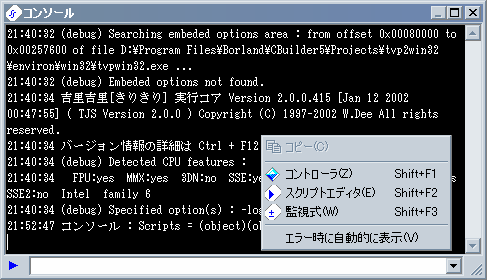

コンソールについて
コンソールは、実行中に Shift + F4 を押すことにより表示することができます。
コンソールでは、吉里吉里のシステムや、ユーザスクリプトが
Debug.message
メソッドで出力する様々なデバッグ用メッセージを表示することができます。また、TJS2 式を入力してその場で実行し、式の結果を表示させる事もできます。
画面の説明

左下にある
はクリックすることにより、その右にある入力欄に入力されたものを TJS2 式として実行することができます。
右クリックメニューの説明です。
コピー
コンソールの選択部分をクリップボードにコピーします。
コントローラ
コントローラ
を表示します。
スクリプトエディタ
スクリプトエディタ
を表示します。
監視式
監視式
を表示します。
エラー時に自動的に表示する
エラーが発生したときに自動的にコンソールを表示するようにします。